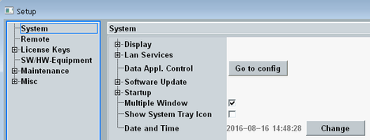
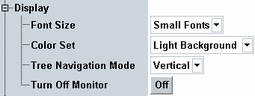
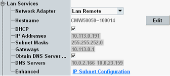
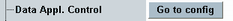
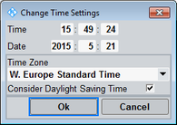
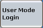

The "System" section of the "Setup" dialog configures the display, the network adapters, settings for remote software update and startup of the instrument.
It also provides access to a configuration dialog of the data application unit (if installed).

The "Display" section contains the following settings.

Configure the look of the GUI at the display.
Remote command:Selects how trees are traversed when you turn the rotary knob on the (soft-) front panel.
- Zigzag: Traverse trees in a zigzag way, moving through all elements line by line.
- Vertical: Traverse trees vertically. You can use the LEFT / RIGHT ARROW keys to traverse horizontally.
- Cursors: The LEFT / RIGHT ARROW keys change to "Zigzag" mode, the UP / DOWN ARROW keys to "Vertical" mode.
Press "Off" to turn off the monitor or display showing the GUI.
You can reactivate the monitor/display via a connected keyboard or a connected mouse.
If you have an instrument with built-in display, you can also press a front panel key for reactivation.
Remote command:The "Lan Services" section contains the following settings.

Each network adapter has an own set of settings.
Some applications need a specific IP address. For details, see "IP Subnet Configuration".
Remote command:SYSTem:COMMunicate:NET:...

If a data application unit (DAU) is installed, "Go to config" opens the "Data Application Control" dialog which lets you configure data testing IP services of the DAU. For more details, refer to the DAU description.
Remote command:n/a
The "Device Group" must match the settings in the "R&S Software Distributor" to perform a remote software update. The entry is case-sensitive and the software distributor does not allow lower case letters.
Remote command:- "Boot Factory Default":
The instrument is booted with factory default settings. Enabling this setting has the same effect as pressing the "Factory Default" softkey each time the instrument is started, see "Startup Dialog". - "Onscreen Keyboard":
Activates the on-screen keypad / keyboard. If you access a numeric entry field, the on-screen keypad is displayed. If you access a text entry field, the on-screen keyboard is displayed.
This feature is useful if you have a touchscreen connected. If you want to use an external keyboard, disable the setting.
See also "Entering Data via the On-Screen Keyboard"
The graphical user interface provides a single-window mode and a multiple-window mode.
If the checkbox is disabled, the single-window mode is used.
If the checkbox is enabled and the screen resolution is sufficient, the multiple-window mode is used. The screen must have a horizontal resolution of at least 1600 pixels, or a vertical resolution of at least 1080 pixels.
Built-in instrument displays have a lower resolution. So the multiple-window mode is only available on external monitors.
See also "Main Window in Multiple-Window Mode".
Remote command:Adds an icon to the system tray of the operating system. If the icon is shown, the CMW software starts up minimized. To access the CMW application after the startup, you must perform the "Open" action.
- "Close" or "Open":
"Close" hides all windows and taskbar entries of the CMW application.
"Open" restores the windows and taskbar entries.
The context menu toggles between the two entries. You can also click the system tray icon to trigger these actions. - "Shutdown":
Shuts down the CMW application.
This section displays the date and time settings of the operating system.
Press "Change" to open a dialog box for configuration of the settings.

Sets the local time of the operating system clock.
Remote command:Sets the local date of the operating system calendar.
Remote command:Sets the time zone in the date and time settings of the operating system.
Remote command:Configures whether the operating system automatically adjusts its clock for daylight saving time (DST) or not.
The rules defining when exactly the clock must be adjusted by which offset, depend on the configured time zone.
Remote command:
The user mode can be changed using the softkey "User Mode Login".
- The "User" mode provides the complete measurement functionality of the R&S CMW and most selftests.
- The "User (Extended)" mode provides additional selftests.
- The remaining user modes are for service purposes.
n/a